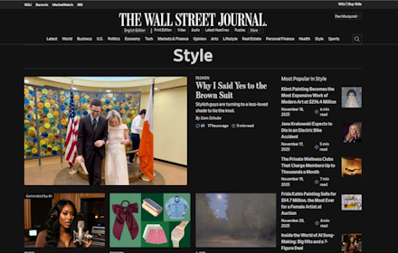

WSJ Elegant Dark Mode
Transform your Wall Street Journal reading experience.
Get from Chrome Store
Why Dark Mode?
Reading long articles and financial data on a bright white screen can strain your eyes. This extension brings a sophisticated, professionally designed dark theme to The Wall Street Journal, optimized for financial data and long-form reading.
Key Features
- One-click toggle between light and dark modes
- Preserves layout – no spacing or sizing changes, only colors
- Fast and lightweight – negligible impact on page load, no flashing
- Comprehensive coverage – tested across homepage, news, markets, opinion, etc.
- Professional design – Easy-to-read dark palette
- Free during early access. Support development if you like it.
Early Access
This Extension is still in "early access", and thus is still in active development. Please give feedback to help us out, and please be patient as we work to keep this extension up to date. WSJ.com is a large, complex website, so this phase of development is especially necessary.
In the extension's browser popup, you'll find a "Send Feedback" link where you can report bugs, flag readability issues, or suggest improvements.
How to Use
- Download from Chrome Store
- Open The Wall Street Journal.
- Click the extension icon to toggle dark mode.
- Enjoy comfortable reading of financial news and analysis.